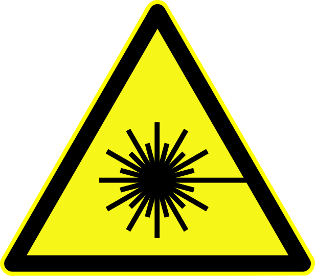

1 Safety Information
Certain aspects of this instrument may pose a risk to the user, bystanders, and personal property. This section provides an overview of potential hazards, and more detail is provided within the manual body. Follow all applicable local and federal laws regarding laser operation and hazardous materials when working with the instrument.
1.1 Symbol Defintions
The following symbols indicate a potential hazard:
 General hazard to person or instrument: This symbol indicates a potential safety hazard. Take care to avoid personal injury and/or damage to the instrument.
General hazard to person or instrument: This symbol indicates a potential safety hazard. Take care to avoid personal injury and/or damage to the instrument.
 Laser radiation hazard: This symbol indicates a potential laser radiation hazard. Take care to avoid exposure to the laser beam(s) and wear eye protection if appropriate.
 Electrical shock hazard: This symbol indicates a potential electrical shock. Ensure the instrument is unplugged before continuing.
Electrical shock hazard: This symbol indicates a potential electrical shock. Ensure the instrument is unplugged before continuing.
1.2 Personal Safety Information
This instrument contains class 3b diode lasers operating at 423 nm, 532 nm, and 781 nm. Direct eye or skin contact with the beam(s) may cause permament personal injury! Avoid direct eye contact with the beam and wear safety goggles of appropriate optical density when necessary! Avoid placing hands in the laser beam(s)! Be weary of wearing rings, watches, or other reflective objects that may cause erratic reflections when working in the beam. Likewise, be careful of reflections from tools that may be placed in the beam.
The control box for this instrument contains 120 VAC wiring. Ensure the instrument is unplugged before opening the control box for maintenance!
1.3 Instrument Safety
The lasers in this instrument are very sensisite to optical feedback. Extreme care should be taken to avoid back reflections entering the laser aperture. Back reflections entering the laser aperture may destroy the laser diode and require purchase of a new laser head. The instrument is equipped with Faraday isolators and bandpass filters to avoid back reflections, and operating the instrument without these in place may cause permanent damage.
The PAS contains custom optics that may be easily scratched and dirtied. Use extreme care when handling optics and follow proper cleaning protocols.
The microphone uses a fiber optic cable that can be permanently damaged if bent of smashed. Handle with care.